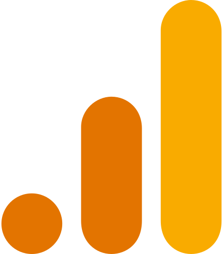
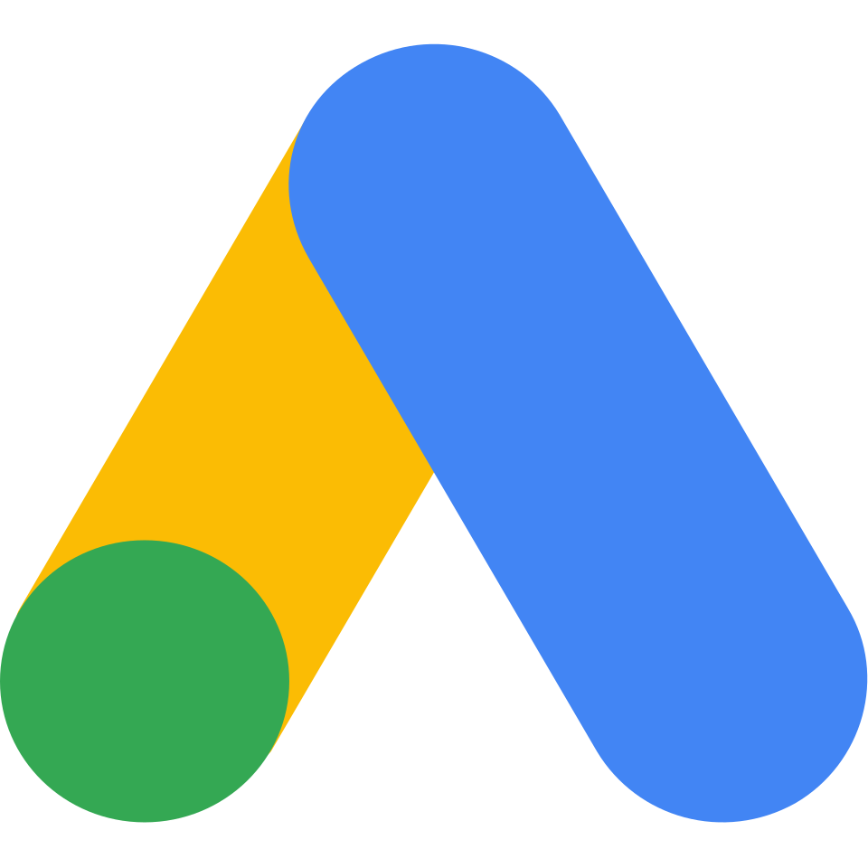
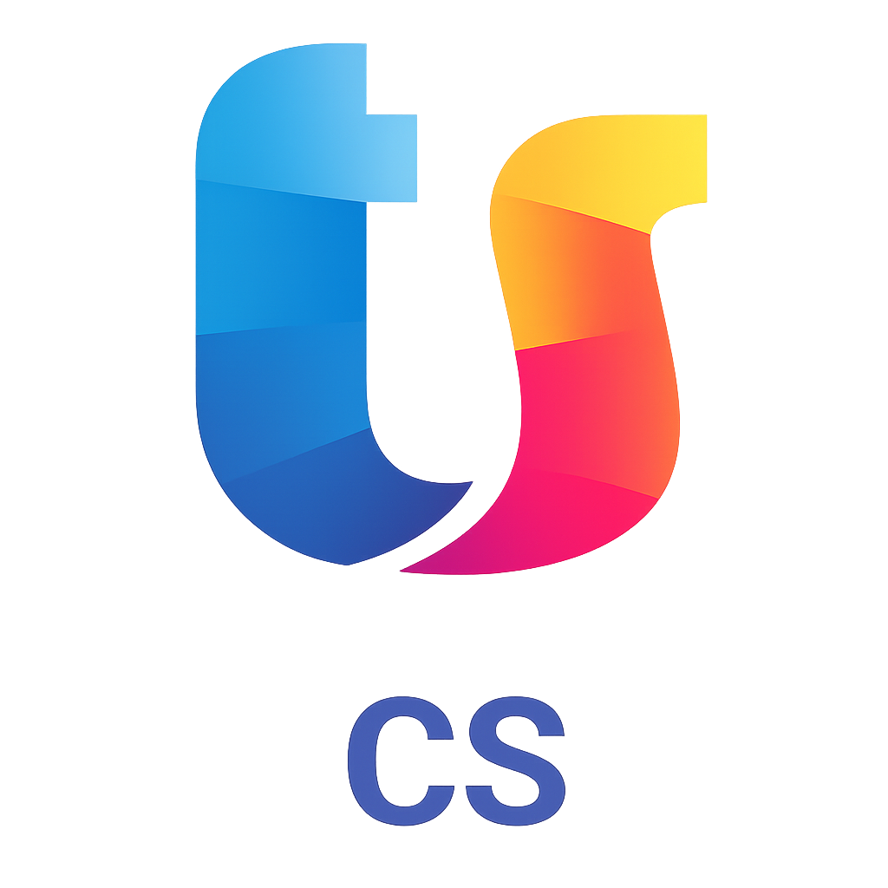
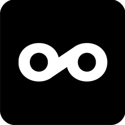
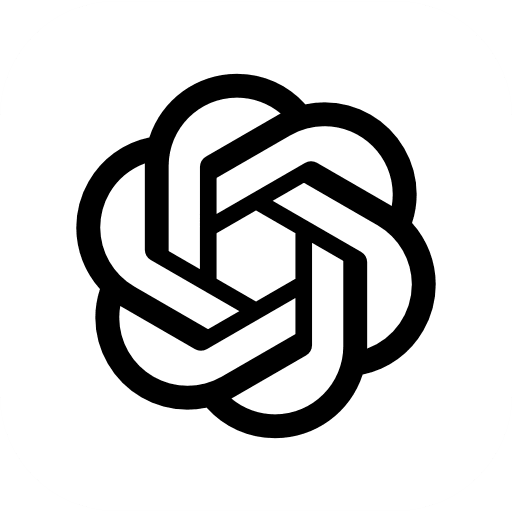
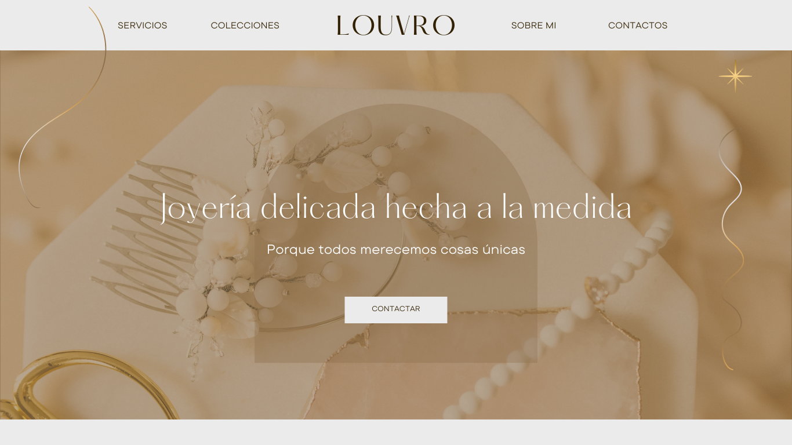

Sara García
Especialista en Marketing Digital y Publicidad
Soy especialista en marketing y publicidad con experiencia en estrategias digitales, branding y campañas creativas. Me apasiona transformar ideas en resultados medibles, conectando marcas con sus audiencias de manera efectiva y creativa.
Técnica Superior en Marketing y Publicidad | Creadora de Contenido RRSS | Optimización SEO | Desarrollo de IA Generativa | Creación y Diseño Web
Contáctame CurriculumExperiencia Laboral
Coordinadora de Relación con Clientes
Leroy Merlin
Coordinación del equipo de atención al cliente en tienda, asegurando un servicio ágil y de calidad. Gestión eficiente de incidencias, devoluciones y reclamaciones, con enfoque en la satisfacción del cliente. Supervisión de los flujos en cajas y servicios para optimizar tiempos de espera. Análisis de la experiencia del cliente e implementación de mejoras en los procesos de atención. Apoyo en la organización de turnos y en la coordinación operativa del equipo.
Practicas como Especialista en Marketing Digital
Empresa Eccuo Digital
Planificación de calendarios de marketing para distintas marcas. Gestión de campañas de email marketing. Creación de contenido para redes sociales. Optimización SEO de contenidos y páginas web. Análisis de páginas web y detección de mejoras. Apoyo en estructura web y organización de contenidos.
Dependienta de tienda
Mango
Durante mi experiencia en Mango trabajé como dependienta realizando atención al cliente, asesoramiento de moda. También me encargué de la reposición de planta y organización de almacén, además de colaborar en tareas de visual merchandising siguiendo los estándares de imagen de la marca.
Practicas como Especialista en Marketing Digital
Empresa Eccuo Digital
Monitorización y optimización SEO basada en análisis de volumen de búsqueda. Identificación de oportunidades de mejora para aumentar la visibilidad web. Creación de contenido digital (posts para redes sociales). Diseño de banners para tiendas online. Desarrollo de estructuras web y organización de menús. Mejora de la arquitectura web orientada a la experiencia de usuario (UX). Detección y análisis de problemas en páginas web. Propuesta de soluciones para optimizar rendimiento y usabilidad.
Carta de recomendaciónPrácticas en Retail & Visual Merchandising
Primark
Experiencia en atención al cliente, resolución de incidencias y gestión en zonas de alta afluencia, así como en control de stock, reposición y organización de almacén. También participé en el montaje y actualización de escaparates aplicando técnicas de visual merchandising, y en la colocación estratégica de producto para maximizar ventas mediante criterios de zonas calientes, cross-selling visual y señalética.
Herramientas






Proyectos Personales
.svg)
Cartel Festival . Adobe Illustrator
Diseñé un cartel A3 listo para impresión usando Illustrator y Photoshop, con tintas planas y sin CMYK. Apliqué composición y tipografía coherente, vectorizando elementos para asegurar calidad y escalabilidad.

Manual Identidad Coorporativa . Canva , Freepik , Adobe Photoshop
Desarrollé un manual de identidad definiendo personalidad, logotipo, colores y tipografías. Establecí normas de uso y aplicaciones para garantizar consistencia de marca.

Cartel promocional . Canva
Creé un cartel promocional en Canva aplicando composición y jerarquía visual. Optimicé tipografía, color y disposición para un resultado claro, atractivo y listo para impresión.

Packaging . Canva
Diseñé un packaging desde cero incluyendo identidad visual, ingredientes y etiquetado. Seguí un manual corporativo para lograr coherencia y un acabado profesional.

Diseño de tarjetas de visita corporativas . Adobe Illustrator
Diseñé tarjetas a doble cara en Illustrator siguiendo principios de diseño y un manual de identidad visual. Trabajé en formato 85×55 mm en CMYK con sangrado y vectorización para impresión profesional.

Banner . Canva, Adobe Photoshop
Diseñé un banner destacando la información con jerarquía visual y coherencia de marca. Optimicé legibilidad e impacto visual para mejorar la experiencia del usuario.
Logotipo Marca . Canva, Adobe Illustrator
Diseñé un logotipo desde cero aplicando principios de simplicidad y legibilidad. Lo desarrollé en vector para asegurar escalabilidad y coherencia visual.

Diseño Sitio Web landing page . Canva
Diseñé una landing page centrada en usabilidad y jerarquía visual. Definí una estructura clara y coherente como base para su desarrollo web.
Formación
Grado Superior
Técnico Superior en Marketing y Publicidad
IES Góngora
Sep. 2024 – Jun. 2026
Estrategias de marketing digital, creación de contenido publicitario, SEO, redes sociales, diseño gráfico y análisis de mercado.
Grados Medios
Técnico en Actividades Comerciales
IES Góngora
Sept. 2022 – Jun. 2024
Técnicas de venta, atención al cliente, visual merchandising y gestión del punto de venta.
Gestión Administrativa
Zalima
Sept. 2020 – Jun. 2021
Gestión de documentación, atención al cliente, herramientas ofimáticas y procesos administrativos.
Certificados & Cursos
Claude 101
Anthropic
Abr. 2026
IA Generativa, Modelos de Lenguaje de Gran Tamaño (LLM) y prompt engineering.
Certificación de Google Analytics
Google Digital Academy · Skillshop
Mar. 2026 · Vence mar. 2027
Google Analytics, SEO y análisis de datos web.
Comercio Electrónico
Google Actívate
Jun. 2025
Comercio electrónico y email marketing.
Curso de WordPress
Edutin Academy
Abr. 2026
Creación, diseño, gestión y optimización de sitios web profesionales desde cero.